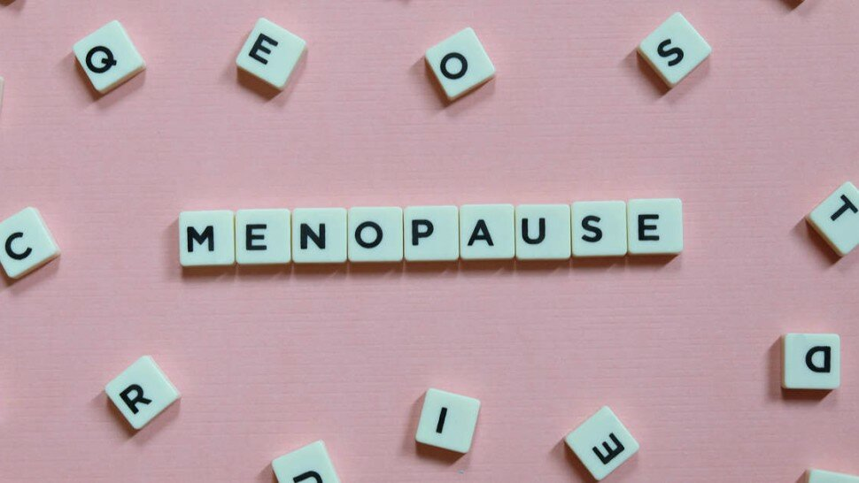

Ménopause et traitements naturels : de la phytothérapie à la médecine douce


Sommaire
- En dépit de son cortège de symptômes difficiles
- Les signes et symptômes
- Plantes pour traiter la ménopause - Illustration
- Quels sont les remèdes naturels pour retarder la ménopause ?
- Quels traitements naturels pour la ménopause ?
- Comment traiter les bouffées de chaleur naturellement ?
- Acupuncture et ménopause
- Le sport peut-il aider à lutter contre les désagréments de la ménopause ? - Vidéo
- Sport et ménopause
- Alimentation équilibrée contre la fatigue
- Avantages des thérapies douces sans hormone
- Sources

La ménopause est l’arrêt des règles qui survient vers l’âge de 50 ans et qui correspond à l’arrêt du fonctionnement hormonal de l’ovaire selon la définition du Collège National des Gynécologues et Obstétriciens Français. En dépit de son cortège de symptômes difficiles à vivre, cette période de transition est une étape cruciale dans la vie d'une femme mais elle peut toutefois être vécue positivement.
Les symptômes de la péri-ménopause et/ou de la ménopause peuvent être aisément restreints voire supprimés.
Les différents traitements alternatifs et les médecines douces [1] vont offrir une réelle amélioration de la vie au quotidien pour les femmes de 50 ans et plus.
Les signes et symptômes
Quels sont les remèdes naturels pour retarder la ménopause ?
Quels traitements naturels pour la ménopause ?
Comment traiter les bouffées de chaleur naturellement ?
Acupuncture et ménopause

Cette branche de la médecine traditionnelle chinoise (qui inspire de nombreuses autres disciplines comme l'EFT), vieille de 5000 ans, a des effets bénéfiques sur les symptômes de la ménopause.
Fondée sur le principe que l’énergie vitale doit circuler dans tout le corps, elle offre face aux désagréments de la ménopause, des résultats rapides et sans aucun effet secondaire.
Les bouffées de chaleur pour ne citer qu’elles, sont provoquées par un trop plein d’énergie yang qui monte vers le haut. L’acupuncture influence le système endocrinien et rétablit l’équilibre. Les organes trop sollicités seront soutenus ou libérés.
Sport et ménopause
Alimentation équilibrée contre la fatigue
Sources
- Médecine douce : le guide des médecines douces; https://www.le-guide-sante.org/actualites/forme-et-bien-etre/medecines-douces-guide-recommandations
- https://www.ameli.fr/bouches-du-rhone/assure/sante/themes/menopause/symptomes-diagnostic
- https://www.msdmanuals.com/fr/accueil/problèmes-de-santé-de-la-femme/troubles-menstruels-et-anomalies-du-saignement-vaginal/ménopause-précoce
- https://www.gynecoquebec.com/sante-femme/menopause/21-menopause.html
- Sexualité de la femme ménopausée : la DHEA est-elle efficace ? https://www.le-guide-sante.org/actualites/medecine/sexualite-femme-menopause-traitement-dhea
- Ménopause et relations amoureuses ne sont pas antinomiques ! https://www.le-guide-sante.org/actualites/geriatrie/menopause-relations-amoureuses-couples
- Le Galcanézumab : une nouvelle approche dans le traitement préventif de la migraine. https://www.le-guide-sante.org/actualites/medicaments/galcanezumab-traitement-preventif-migraine
- Régime végétarien : avantages et inconvénients. https://www.le-guide-sante.org/actualites/nutrition/regime-vegetarien-avantages-inconvenients
- Endométriose et diagnostic précoce. https://www.le-guide-sante.org/actualites/medecine/endometriose-diagnostic-precoce
- Lifestyle and dietary factors determine age at natural menopause. J Midlife Health. 2014;5(1):3-5. doi:10.4103/0976-7800.127779. https://www.ncbi.nlm.nih.gov/pmc/articles/PMC3955043/
- The effects of flaxseed on menopausal symptoms and quality of life. Holist Nurs Pract. 2015 May-Jun;29(3):151-7. doi: 10.1097/HNP.0000000000000085. PMID: 25882265. https://pubmed.ncbi.nlm.nih.gov/25882265/
- Are There Any Beneficial Effects of Spirulina Supplementation for Metabolic Syndrome Components in Postmenopausal Women? Mar Drugs. 2020 Dec 17;18(12):651. doi: 10.3390/md18120651. PMID: 33348926; PMCID: PMC7767256. https://pubmed.ncbi.nlm.nih.gov/33348926/
- Efficacy of Crocus sativus (saffron) in treatment of major depressive disorder associated with post-menopausal hot flashes: a double-blind, randomized, placebo-controlled trial. Arch Gynecol Obstet. 2018 Mar;297(3):717-724. doi: 10.1007/s00404-018-4655-2. Epub 2018 Jan 13. PMID: 29332222. https://pubmed.ncbi.nlm.nih.gov/29332222/
- The effect of Hop (Humulus lupulus L.) on early menopausal symptoms and hot flashes: A randomized placebo-controlled trial. Complement Ther Clin Pract. 2016 May;23:130-5. doi: 10.1016/j.ctcp.2015.05.001. Epub 2015 May 12. PMID: 25982391. https://pubmed.ncbi.nlm.nih.gov/25982391/
- Libido du sénior : comment l'augmenter ? https://www.le-guide-sante.org/actualites/geriatrie/libido-senior-comment-augmenter
- Libido : un Viagra pour les femmes pourrait être en vente d’ici 2015. https://www.le-guide-sante.org/actualites/medicaments/libido-viagra-femmes-sante-sexuelle
- Méditation de pleine conscience : se relier à l’instant présent. https://www.le-guide-sante.org/actualites/forme-et-bien-etre/meditation-pleine-conscience-bienfaits
- L'activité physique est un traitement : interview d'un médecin du sport. https://www.le-guide-sante.org/actualites/forme-et-bien-etre/activite-physique-interview-medecin-sport
- Seniors et ostéoporose bouger pour la prévenir ! https://www.le-guide-sante.org/actualites/geriatrie/seniors-osteoporose-prevention-exercice
- Menopause and exercise. Natalia M Grindler, Nanette F Santoro. 2015 Dec;22(12):1351-8. doi: 10.1097/GME.0000000000000536
https://journals.lww.com/menopausejournal/Abstract/2015/12000/Menopause_and_exercise.15.aspx - https://apps.who.int/iris/bitstream/handle/10665/337003/9789240014862-fre.pdf
- Effects of Pilates on fall risk factors in community-dwelling elderly women: A randomized, controlled trial. Agustín Aibar-Almazán et al. European Journal of Sport Science, Volume 19, 2019. doi: 10.1080/17461391.2019.1595739
- Hatha Yoga practice decreases menopause symptoms and improves quality of life: A randomized controlled trial. Márcia P Jorge et al. Complementary Therapies in Medicine; Volume 26, June 2016, Pages 128-135.
- Resistance training and sarcopenia. Francesco Giallauria et al. Vol. 84 N°. 1-2 (2015): Vol 84 N° 1-2 (2015). Cardiac Series ; doi: 10.4081/monaldi.2015.738
- Antony Philippe. Effets de l’entraînement en résistance, de la performance à l’unité contractile. Médecine humaine et pathologie. Université Montpellier, 2015.
- Les vitamines : carences et excès - de la vitamine A à la vitamine D ! [1/2] https://www.le-guide-sante.org/actualites/nutrition/vitamines-carences-exces-ep-1